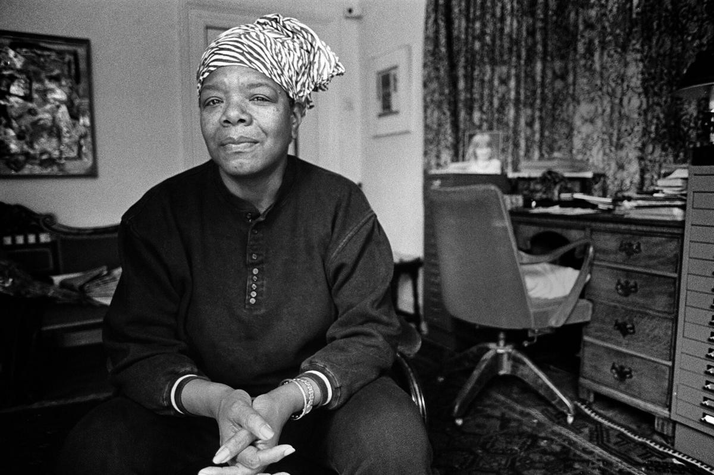

Ativista negra, poeta e mulher revolucionária

Maya Angelou, pseudónimo de Marguerite Ann Johnson (St. Louis, Missouri, 4 de abril de 1928 — Winston-Salem, Carolina do Norte, 28 de maio de 2014) foi uma escritora e poetisa dos Estados Unidos.
"Pode me atirar palavras afiadas, Dilacerar-me com seu olhar, Você pode me matar em nome do ódio, Mas ainda assim, como o ar, eu vou me levantar." - Still I Rise
Sua história
Ela nasceu com o nome de Marguerite Ann Johnson, em 1928, na cidade de St. Louis, Illinois. Vivendo entre Illinois e a Califórnia, sua infância não foi fácil: Maya passou cinco anos sem falar nada, devido ao trauma de ter sido estuprada aos sete anos de idade. O agressor era namorado de sua mãe e foi morto pelos tios dela. Não bastasse ter sido violentada, ela também sentia-se culpada pela morte do homem. Maya contou ao mundo essa história através de seu primeiro e mais famoso livro, a autobiografia “I know why the caged bird sings” – “Eu sei por que o pássaro canta na gaiola”, em português.
Publicado em 1969, o livro fez com que Maya Angelou se tornasse uma das primeiras mulheres negras a emplacar um best seller nos Estados Unidos. Mas essa mulher já havia sido pioneira muito antes disso. Aos 16 anos de idade, ela viria a ser a primeira mulher negra a trabalhar como motorista do transporte público de São Francisco. Pouco tempo depois, tornou-se mãe solo, mas isso não a impediu de tentar a chance de Hollywood.
Maya foi poetisa, escritora, ativista de direitos civis e historiadora, entre outras coisas. Também foi atriz, dançarina e cantora. No cinema e na TV, ela foi diretora, roteirista, produtora e atriz. Também arriscava-se como cantora, mas, na indústria fonográfica, Maya brilhava mesmo era nos discos não cantados – em que o artista declama textos. Ela venceu três Grammys na categoria de Melhor Álbum de Palavra Falada ou Álbum Não Cantado.
Ainda no campo artístico, além do best seller poderoso que colocou seu nome no mapa (e que deu origem a outras seis autobiografias), Maya também era poeta. Seu poema mais célebre, “Still I Rise” tornou-se um icônico manifesto do movimento negro nos Estados Unidos. Mas a contribuição de Maya para o movimento jamais esteve limitada à escrita. Ela militou ativamente pelo fim da segregação racial nos EUA e foi amiga pessoal de Martin Luther King e Malcolm X. Também trabalhou em missões humanitárias na África, nos anos 1960. Décadas mais tarde, viria a ser conselheira dos presidentes Bill Clinton e Barack Obama.
A ativista recebeu diversas condecorações durante a vida, incluindo a Medalha Presidencial da Liberdade, a maior honraria concedida a um civil nos Estados Unidos. Essa medalha lhe foi dada em 2011, por Obama. Três anos depois, Maya viria a falecer, em 28 de maio de 2014, aos 86 anos. Negra, sobrevivente da violência, jovem batalhadora, artista e ativista. Maya Angelou foi um grande exemplo de mulher e é maravilhoso ver que seu trabalho e sua história continuam vivos. Em tempos de tamanha intolerância é mais importante do que nunca relembrar a trajetória de uma guerreira tão inspiradora.